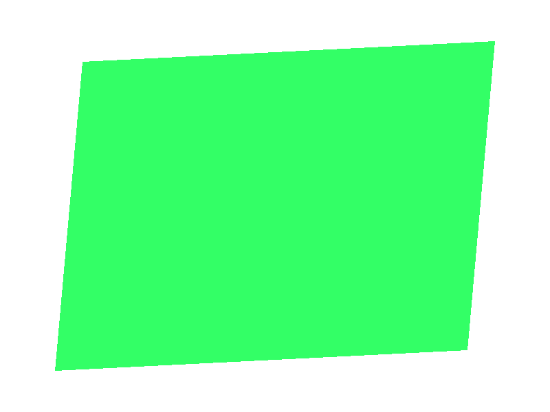

Note
Go to the end to download the full example code
Draw a Quad#
Simple example demonstrating showing a quad using a gloo Program.
from vispy import gloo
from vispy import app
import numpy as np
# Create vertices
vPosition = np.array([[-0.8, -0.8, 0.0], [+0.7, -0.7, 0.0],
[-0.7, +0.7, 0.0], [+0.8, +0.8, 0.0, ]], np.float32)
VERT_SHADER = """ // simple vertex shader
attribute vec3 a_position;
void main (void) {
gl_Position = vec4(a_position, 1.0);
}
"""
FRAG_SHADER = """ // simple fragment shader
uniform vec4 u_color;
void main()
{
gl_FragColor = u_color;
}
"""
class Canvas(app.Canvas):
def __init__(self):
super().__init__(keys='interactive')
# Create program
self._program = gloo.Program(VERT_SHADER, FRAG_SHADER)
# Set uniform and attribute
self._program['u_color'] = 0.2, 1.0, 0.4, 1
self._program['a_position'] = gloo.VertexBuffer(vPosition)
gloo.set_clear_color('white')
self.show()
def on_resize(self, event):
width, height = event.physical_size
gloo.set_viewport(0, 0, width, height)
def on_draw(self, event):
gloo.clear()
self._program.draw('triangle_strip')
if __name__ == '__main__':
canvas = Canvas()
app.run()
Total running time of the script: ( 0 minutes 0.504 seconds)